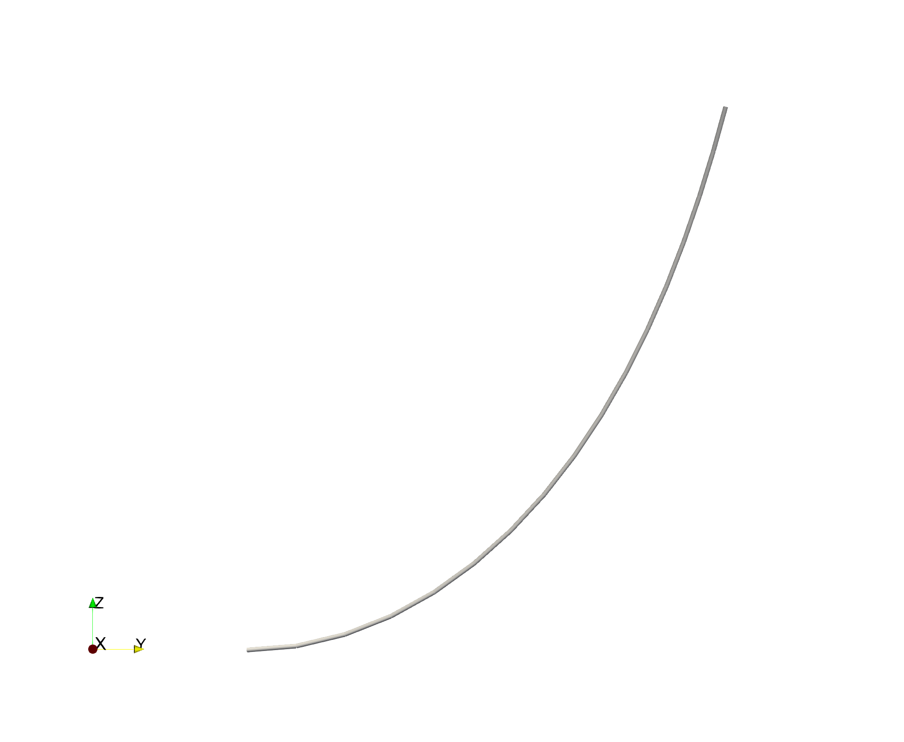

Bending of an Initially Curved Beam
This example is a common benchmark problem for the geometrically exact bending of nonlinear beams.
This example is also available as a Jupyter notebook: curved.ipynb.
using GXBeam, LinearAlgebra
# problem constants
R = 100
L = R*pi/4 # inches
h = w = 1 # inches
E = 1e7 # psi Young's Modulus
ν = 0.0
G = E/(2*(1+ν))
# beam starting point, frame, and curvature
start = [0, 0, 0]
frame = [0 -1 0; 1 0 0; 0 0 1]
curvature = [0, 0, -1/R]
# cross section properties
A = h*w
Ay = A
Az = A
Iyy = w*h^3/12
Izz = w^3*h/12
J = Iyy + Izz
# discretize the beam
nelem = 16
ΔL, xp, xm, Cab = discretize_beam(L, start, nelem;
frame = frame,
curvature = curvature)
# force
P = 600 # lbs
# index of left and right endpoints of each beam element
pt1 = 1:nelem
pt2 = 2:nelem+1
# compliance matrix for each beam element
compliance = fill(Diagonal([1/(E*A), 1/(G*Ay), 1/(G*Az), 1/(G*J), 1/(E*Iyy),
1/(E*Izz)]), nelem)
# create assembly of interconnected nonlinear beams
assembly = Assembly(xp, pt1, pt2, compliance=compliance, frames=Cab,
lengths=ΔL, midpoints=xm)
# create dictionary of prescribed conditions
prescribed_conditions = Dict(
# fixed left endpoint
1 => PrescribedConditions(ux=0, uy=0, uz=0, theta_x=0, theta_y=0, theta_z=0),
# force on right endpoint
nelem+1 => PrescribedConditions(Fz = P)
)
# perform static analysis
system, state, converged = static_analysis(assembly;
prescribed_conditions = prescribed_conditions)
println("Tip Displacement: ", state.points[end].u)
println("Tip Displacement (Bathe and Bolourch): [-13.4, -23.5, 53.4]")Tip Displacement: [-13.5773837268138, -23.5453033370691, 53.45800757557757]
Tip Displacement (Bathe and Bolourch): [-13.4, -23.5, 53.4]The calculated tip displacements match those reported by Bathe and Bolourch in "Large Displacement Analysis of Three-Dimensional Beam Structures" closely, thus verifying our implementation of geometrically exact beam theory.
We can visualize the deformed geometry and inspect the associated point and element data using ParaView.
mkpath("curved-visualization")
write_vtk("curved-visualization/curved-visualization", assembly, state)
This page was generated using Literate.jl.